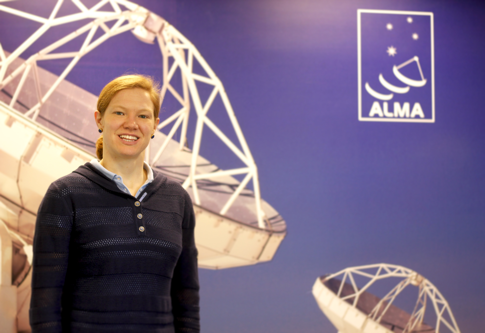

About Me

Education: Ph.D., 2015, Yale University (Connecticut, USA)
B.A., 2009, Middlebury College (Vermont, USA)
Research interests: Star formation, protostellar outflows, molecular cloud evolution;
ALMA support: User Support Services Group, ALMA Archive
Scholarly publications: Here
Research

In a few words, I study how stars form. In a few more words, I study the dusty and gaseous environments known as star-forming regions, where many protostars are forming in close temporal and spatial proximity. My research depends on advanced interferometric observational techniques.
To learn more, please follow this link to my scholarly publications and conference contributed works.
Contact
Email: aplunket@nrao.edu
Address: National Radio Astronomy Observatory (NRAO), Charlottesville, VA